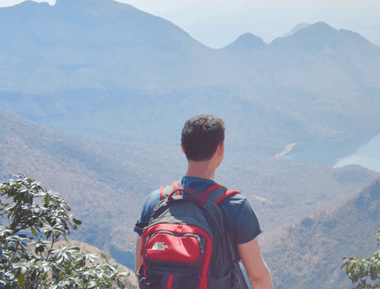
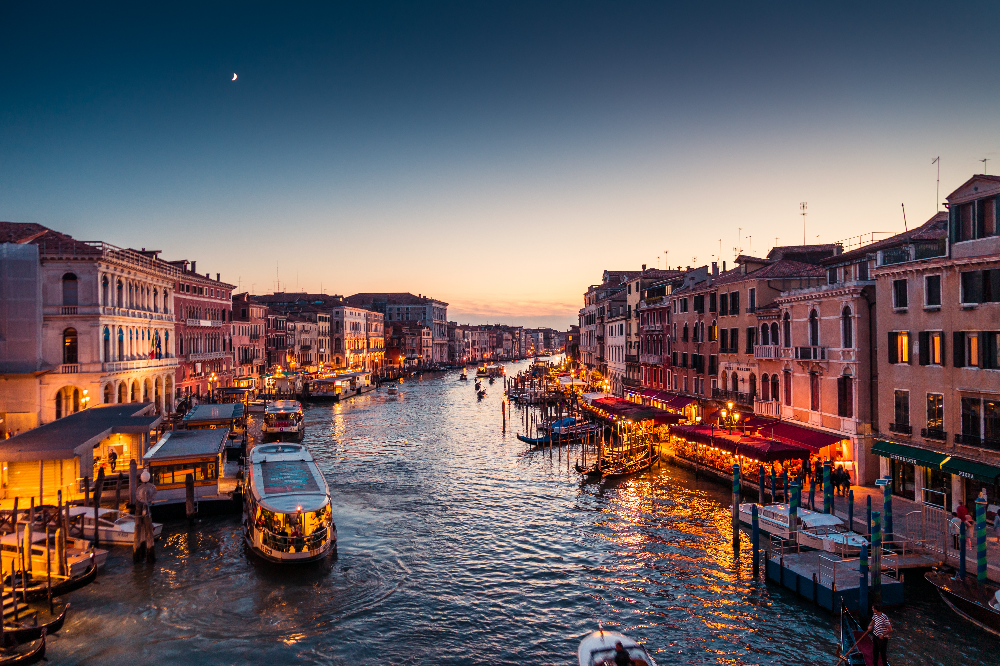

Destination 1: Venice, Italy

Nomadic Matt
Discovering the Allure of Venice: A Travel Blog Journey
When you think of romantic cities, Venice springs to mind, often referred to the "City of Canals." Floating on its serene waterways and adorned with stunning Renaissance architecture, Venice has captivated travelers for centuries. If you’re planning a trip or simply daydreaming about this enchanting place, this travel blog will guide you through the essential experiences that Venice offers, ensuring you make the most of your visit.

The Magic of Venetian Canals
Venice’s unique charm stems from its canals, which serve as the lifeblood of the city. Spanning over 26 miles, the waterways are an essential part of daily life.
A Gondola Ride to Remember
One of the most iconic experiences in Venice is undoubtedly a gondola ride. It’s a fantastic way to get a close-up view of the city's beauty.
- Expectations: The peaceful sway of the gondola as it glides along the Grand Canal can be mesmerizing.
- Price: While prices may vary, a typical gondola ride can cost around €80 for a 30-minute journey, with costs escalating during the evening.
- Experience: Listen to the gondolier share tales of the city’s rich history as you soak in the views.
“There’s something utterly captivating about floating silently through the heart of Venice, with its ornate architecture reflecting off the shimmering water.”
Navigating the Vaporetto
For a more practical and economical way to experience the waterways, consider taking a Vaporetto, the city’s water bus.
Exploring Iconic Landmarks
As you wander through the streets of Venice, you'll encounter a plethora of stunning sights that beckon for a visit.
St. Mark’s Basilica
No trip to Venice is complete without visiting St. Mark’s Basilica. This masterpiece of Byzantine architecture boasts dazzling mosaics and intricate details that leave visitors awe-struck.
- Highlights: Marvel at the golden altarpiece, gold mosaics, and the famous horses of Saint Mark.
- Entry Fees: Entrance to the basilica is free, but consider a guided tour for deeper insights (typically €10).
The Grand Canal
Picture this: you’re sitting at a café alongside the Grand Canal, sipping a cappuccino as you watch the world float by.
- Best Views: The most famous buildings line this waterway, including the Ca’ d’Oro and the Rialto Bridge.
- Photo Opportunities: Early morning or sunset offers perfect lighting for stunning photographs.
Savoring Venetian Cuisine
Food is at the heart of Venetian culture. Sampling the local dishes is an experience that transcends mere nourishment.
Cicchetti: Venetian Tapas
While you explore the streets, don’t miss trying Cicchetti, small plates that reflect the local flavors.
- Must-Try Options:
- Baccalà Mantecato: Creamy cod spread.
- Sarde in Saor: Sweet-and-sour sardines.
- Where to Find Them: Head to local bacari (wine bars) like Osteria Al Squero for an authentic taste
Dining by the Canal
For a memorable dinner, enjoy the ambiance of one of the many restaurants lining the canals.
- Recommendations:
- Antiche Carampane: Famous for its seafood dishes.
- Trattoria da Fiore: A renowned spot that offers a modern take on traditional Venetian cuisine.
Practical Tips for Visiting Venice
Venice can be both thrilling and overwhelming. Here are some tips to enhance your travel experience.
Getting Around
- Walking: Venice is best explored on foot. Be prepared for wandering through narrow alleyways and over charming bridges.
- Getting Lost: Embrace the charm of getting a little lost; sometimes the most captivating sights are hidden off the beaten path.
Best Time to Visit
- Spring and Fall: The ideal seasons for visiting are late spring (May to June) or early fall (September to October) when the weather is pleasant and crowds are thinner.
Conclusion
Venice is a city that ignites the senses, from its stunning canals to its mouthwatering cuisine. Whether you're gliding through its waterways in a gondola, savoring local delicacies, or exploring its remarkable architecture, every moment spent in Venice is a memory in the making.
“Traveling to Venice isn't just about seeing – it's about experiencing the magical ambiance that frames this remarkable city.”
So, pack your bags and get ready to explore the winding streets, relish the flavors, and create unforgettable stories in this remarkable destination. What are you waiting for? Venice is calling, and it’s a trip you won't want to miss!
Follow Me
For more travel inspiration, tips, and insights, follow me on social media: